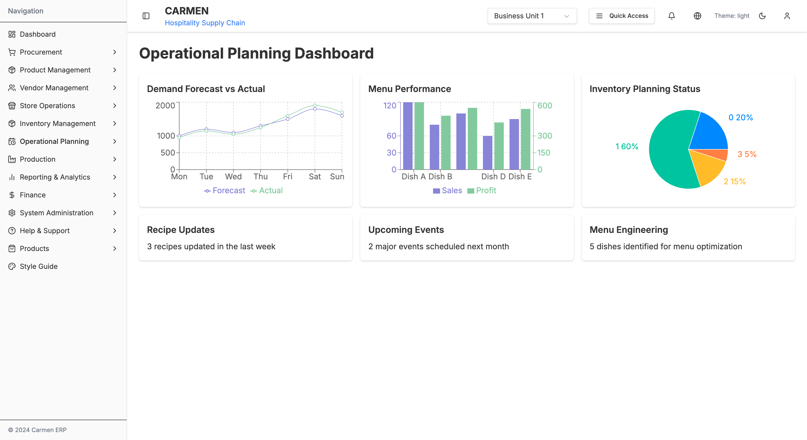
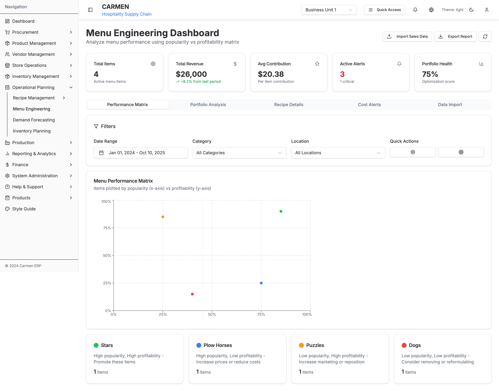
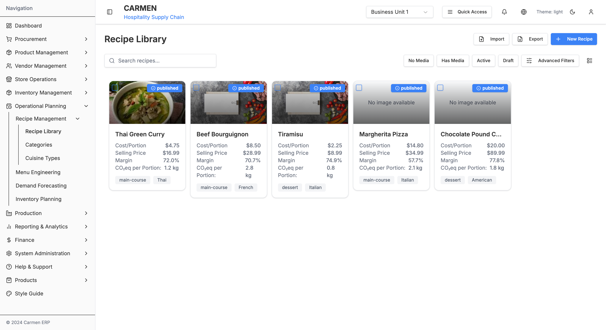
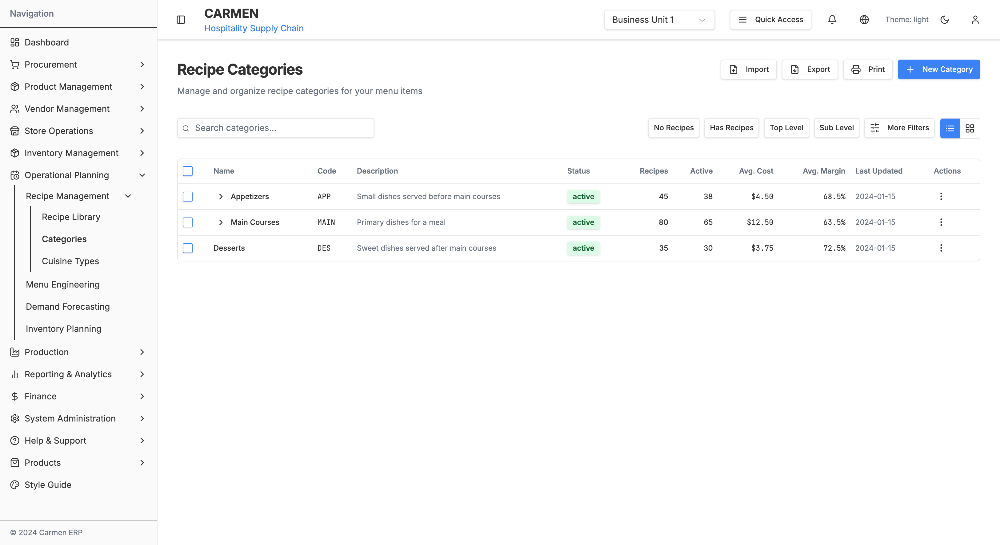
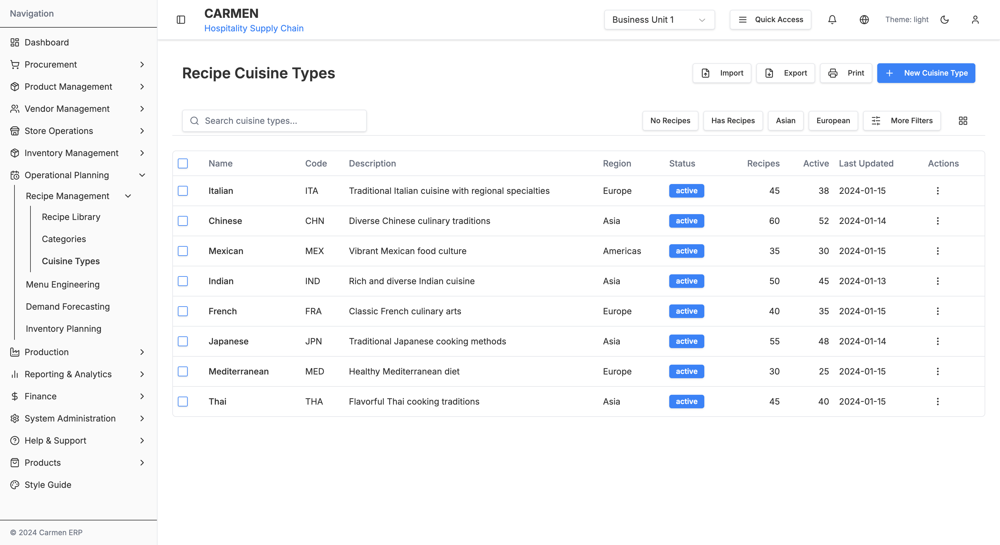

Operational Planning Module Documentation
Overview
The Operational Planning module is a comprehensive system for managing recipes, menu engineering, demand forecasting, and inventory planning within the Carmen ERP system. It serves as the central hub for operational decision-making and strategic planning.
Module Screenshots

Operational Planning Dashboard - Draggable widget system with demand forecasting and menu performance analytics
Module Information
- Main Path:
/operational-planning - Icon: Calendar/Planning
- Primary Purpose: Operational planning, recipe management, menu optimization, and demand forecasting
- Status: Production-ready with prototype features
Quick Navigation
Submodules
The Operational Planning module consists of 2 main submodules:
1. Menu Engineering
Path: /operational-planning/menu-engineering
Purpose: Analyze menu performance using popularity vs profitability matrix

Menu Engineering Dashboard - Performance matrix with Stars, Plow Horses, Puzzles, and Dogs quadrants
Features:
- Menu performance matrix (BCG matrix for food)
- Sales data import
- Recipe performance metrics
- Cost alert management
- Portfolio analysis
- Data visualization with charts
2. Recipe Management
Path: /operational-planning/recipe-management
Purpose: Comprehensive recipe CRUD operations, categorization, and cuisine management

Recipe Library - Grid view with recipe cards showing cost, margin, and CO₂ metrics

Recipe Categories - Hierarchical category management with expandable tree structure

Cuisine Types Management - Regional cuisine classification and organization
Features:
- Recipe library with list/grid views
- Recipe categories hierarchy
- Cuisine types management
- Cost and margin tracking
- CO₂ footprint calculation
- Recipe status management (draft, published)
Key Features
Operational Planning Dashboard
- ✅ Draggable widget system using React Beautiful DnD
- ✅ Demand forecast vs actual visualization
- ✅ Menu performance charts
- ✅ Inventory planning status (pie chart)
- ✅ Recipe updates tracking
- ✅ Upcoming events management
- ✅ Menu engineering insights
Menu Engineering
- ✅ BCG Matrix for menu items (Stars, Plow Horses, Puzzles, Dogs)
- ✅ Performance plotting by popularity and profitability
- ✅ Sales data import functionality
- ✅ Cost alert management
- ✅ Portfolio health scoring
- ✅ Recipe performance metrics
- ✅ Advanced filtering (date range, category, location)
Recipe Management
- ✅ Recipe CRUD operations
- ✅ Grid and list view toggles
- ✅ Recipe categorization (3-level hierarchy)
- ✅ Cuisine type classification
- ✅ Cost per portion calculation
- ✅ Selling price and margin tracking
- ✅ CO₂ equivalent per portion
- ✅ Recipe status workflow (draft, published)
- ✅ Search and filtering
- ✅ Bulk operations
Technical Implementation
Tech Stack
- Frontend: Next.js 14 (App Router), React, TypeScript
- UI Components: Shadcn/ui, Radix UI
- Styling: Tailwind CSS
- Charts: Recharts (Bar, Line, Pie charts)
- Drag & Drop: React Beautiful DnD
- State Management: React hooks, useState
- Forms: React Hook Form + Zod validation
Key Components
OperationalPlanningPage- Main dashboard with draggable widgetsMenuEngineeringDashboard- BCG matrix and performance analysisRecipeList- Recipe library with grid/list viewsRecipeCard- Individual recipe display componentCategoryTree- Hierarchical category managementCuisineTypesList- Cuisine types table management
File Locations
app/(main)/operational-planning/
├── page.tsx # Main dashboard
├── menu-engineering/
│ ├── page.tsx # Menu engineering dashboard
│ └── components/
│ ├── sales-data-import.tsx
│ ├── recipe-performance-metrics.tsx
│ └── cost-alert-management.tsx
└── recipe-management/
├── recipes/
│ ├── page.tsx # Recipe library
│ ├── [id]/page.tsx # Recipe detail
│ ├── new/page.tsx # Create recipe
│ └── create/page.tsx # Alternative create
├── categories/
│ └── page.tsx # Category management
└── cuisine-types/
└── page.tsx # Cuisine types
Navigation Paths
- Dashboard:
/operational-planning - Menu Engineering:
/operational-planning/menu-engineering - Recipe Library:
/operational-planning/recipe-management/recipes - Recipe Categories:
/operational-planning/recipe-management/categories - Cuisine Types:
/operational-planning/recipe-management/cuisine-types
Screenshots
Dashboard
- Operational Planning Dashboard - Main dashboard with draggable widgets
{kind=link}
Menu Engineering
- Menu Engineering Dashboard - Performance matrix and analytics
{kind=link}
Recipe Management
- Recipe Library - Grid view with recipe cards
- Recipe Categories - Hierarchical category tree
- Cuisine Types - Cuisine type management table
{kind=link}
{kind=link}
{kind=link}
Future Enhancements
Potential additions to the Operational Planning module:
- Demand Forecasting - Predictive analytics for demand planning
- Inventory Planning - Automated inventory optimization
- Seasonal Menu Planning - Calendar-based menu scheduling
- Recipe Costing Engine - Real-time cost updates based on ingredient prices
- Nutritional Analysis - Complete nutritional breakdown per recipe
- Allergen Management - Allergen tracking and labeling
- Recipe Scaling - Automatic ingredient scaling for batch sizes
- Print Functions - Recipe cards and menu printing
Related Documentation
- Product Management Documentation
- Inventory Management Documentation
- Vendor Management Documentation
- Store Operations Documentation
Contact & Support
For questions or issues related to the Operational Planning module:
- Check the screenshots for visual references
- Review the OPERATIONAL-PLANNING-MODULE for detailed specifications
- Contact the development team for technical support
Last Updated: October 10, 2025
Module Version: 1.0 (Menu Engineering), 1.0 (Recipe Management)
Documentation Status: Complete